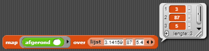

keep blok stelt jou in staat alle items door te nemen met gebruik van een
predicaat, en het geeft alleen de items door die het predicaat waar maken. Het
blok steld je ook in staat
om door een hele lijst in een keer te werken. Map zorgt ervoor dat je dezelfde functie uit kan
voeren op ieder item in een lijst. Map ontvangt twee inputs: een functie (een reporter met een leeg
invoer vak) en een lijst, en het rapporteerd een nieuwe lijst. Elk item in deze nieuwe lijst is het resultaat
van het oproepen van de functie met een item van de originele lijst als input. Bijvoorbeeld:
